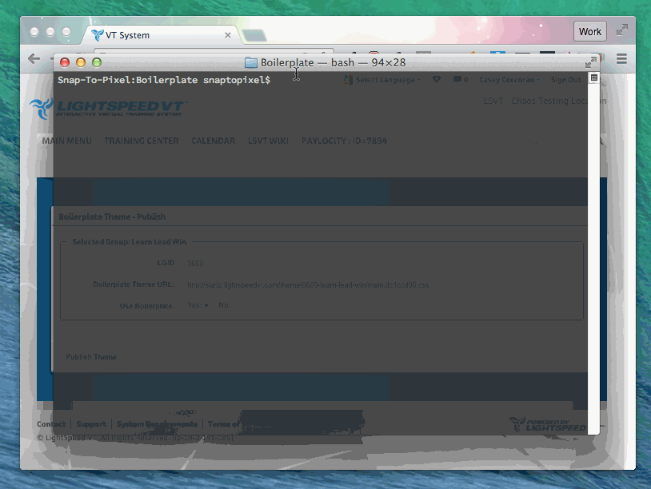

Applying Your Theme
Once you've gotten your theme ready locally, publishing and previewing it is easy. Follow these instructions and you'll be ready to go!
Logging In
Before previewing or publishing your theme, make sure you open Google Chrome and log in to the system with a theme admin account.
Previewing Your Theme
In order to preview your theme, the main css file and accompanying images must be uploaded to amazon and the path must be set in the system. Fortunately, we're able to automate most of the process via grunt. All you'll need to do is to type grunt preview in your terminal and the files will be uploaded.
Once the upload is complete, the theme utility will be opened inside the system with the appropriate values set. Simply click the preview button and the theme will be applied.
Note: This will only affect your current session and not alter any group settings.

Publishing Your Theme
The publish process is essentially the same as previewing your theme with a few distinctions:
- All images and the main css file are versioned via a "hash" appended to the filename such as
file.2idskl4b.png - The published url will be hosted on cloudfront at
http://static.lightspeedvt.com - The theme util will update the selected LGID's group settings (not just the current user's session) upon clicking the publish button
- Any changes to the theme's configuration/source-code will be pushed to Github.
Once you're ready to launch your theme simply type grunt publish in your terminal. The associated files will be versioned and uploaded, then the theme util will launch in your browser allowing you to activate the theme in the appropriate system.